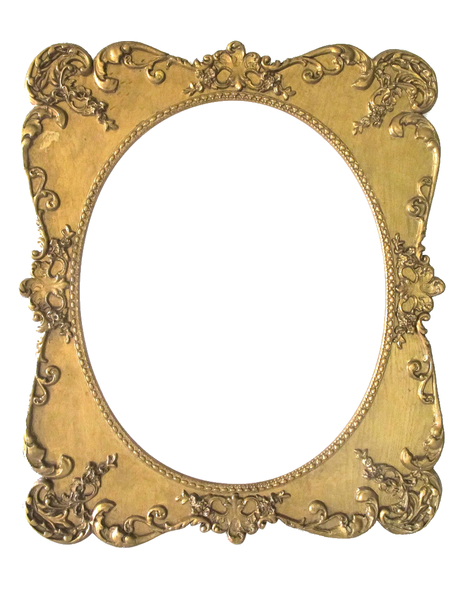

Téa Wright
テア・ライト ❦ 테아 라이트
teaywright [at] berkeley [dot] edu
About Me
Hi! I'm a PhD student at UC Berkeley advised by Alane Suhr, affiliated with Berkeley AI Research and Berkeley NLP. I received my B.S. in Computer Science from the University of Colorado Boulder in 2024 where I was an undergraduate researcher with Katharina von der Wense in the NALA lab. My research interests broadly include natural language processing and machine learning. I'm currently interested in cognitively-inspired approaches to NLP and efficient methods for low-resource language technologies.
I grew up in Boulder, Colorado and enjoy hiking, reading, movies, piano, and travel. I'm currently learning Spanish, Japanese, and Korean!
News
- Sep 2026 I'll be attending COLM 2026! Drop by our workshop on Learning from Situated and Embodied Interaction.
- Jul 2026 Two papers accepted to COLM 2026: Learning to Refer from Estimated Listener Gaze and An Investigation of Translationese in the Generations of Multilingual Large Language Models!
- Jun 2025 Awarded the NSF Graduate Research Fellowship (GRFP)!
- Jan 2025 Presented Measuring Contextual Informativeness in Child-Directed Text at COLING 2025 in Abu Dhabi.
Selected Publications
Awards
- NSF GRFP (2026)
- UC Berkeley Chancellor's Fellowship (2024–2025)
- CRA Outstanding Undergraduate Researcher Award - Honorable Mention (2024)
Contact
Feel free to email me at teaywright [at] berkeley [dot] edu if you'd like to connect!